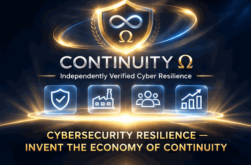

ENGLISH · PRESERVED ORIGINAL
Ascent
An emblem forms above Earth, followed by the people, productive means and institutions a continuity service would need.

Read the complete transcript
- A shield outline appears above Earth. No text.
- The infinity symbol appears inside the shield. No text.
- The omega symbol completes the shield. No text.
- The brand “CONTINUITY Ω” appears.
- The subtitle appears: “Independently Verified Cyber Resilience”.
- Three icons appear beneath the brand and subtitle: a checked shield, a factory and people.
- A growth icon joins the three existing icons. The brand and subtitle remain.
- The closing descriptor appears: “CYBERSECURITY RESILIENCE — INVENT THE ECONOMY OF CONTINUITY”.
- The full emblem, four icons and closing descriptor remain in the final composition.